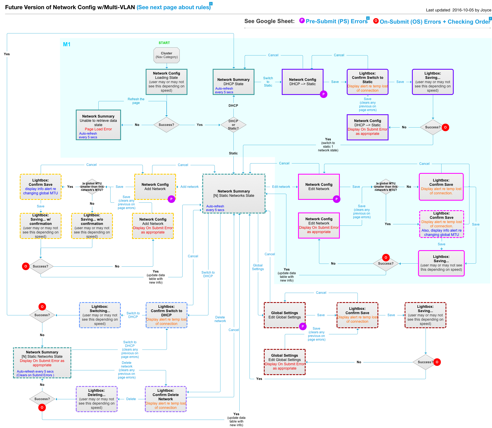

Software Upgrade Experience
Project Introduction
Software Upgrade is the project I have worked on twice since I joined Qumulo. As the UX designer of this project, I was overseeing UX from the conception stage to launch. Collaborating with the dev team and PM, I started conducting user interviews to research on what users pain points are and what their ideal upgrade experience would be like till later stage prototyping and usability tests.
Company
Qumulo
Created
09/2016
Role
UX Designer
Before redesign
There was no UI for users to do software upgrade. Every time when users upgrading the software, they needed to set up a series of scripts and ran it through command lines. It was a long process also it is very easy for users to fat fingered the script. We release our software every two weeks. Because it was a long and painful process, a lot of users were procrastinating the upgrade process.
What's the goal of this project?
The users will be able to upgrade the system through UI. By launching the upgrade UI, we hope to get the leftbehind users on speed with our software releases.
Users' Pain Points
- There was no user interface for them to perform upgrade. Using command line took a long time as well as increased the chances of making mistakes. - The upgrade cost at least 15 mins system down time. It became impossible for some users to upgrade in their work environment because they need to user the system 24*7. There is almost no down time allowed in their work environment. - Because there was at least 15 mins required downtime every other week when they upgraded the system, some users want to lower the frequency of upgrading software. They want to upgrade more than one versions at a time.
Design Process
1. User Research
The PM had talked with a lot of users before this project started and generated a rough idea of what the new function Stanley needs. Based on that, I started interviewing our customer support team to prioritize the users needs.
2. BrainStorming
Notes from brainstorming session

UX flow draft
3. Create UX flow
Collaborating with PM and engineers, I defined the scope of FSV(first sellable version) as well as its relevant user stories in prioritized order.
UX flow diagram
4. Sketch and wireframe
Wireframe - Network Summary Page
Wireframe - Edit a Network Page
5. Usability Test
We conducted usability tests with 10 people from our customer base. After the usability tests, we found out the new set of design is well understood by both types of users Stanley and Gerald. There were no major stumbling point for users when they were trying to accomplish the tasks.
Here’s a quote from one of our users:
“Seems really straightforward - it’s probably the most complicated set up to config of cluster - it’s really simple, especially compared to other system that I’m used to.”
6. High-fidelity Design and Specification
After the usability tests, I feel pretty confident about the design. After making several tweaks based on usability test feedback, I moved to visual design and specification part.
What I learned from this project?
1. Persona
As we are having more and more users, the new design needs to satisfies both Gerald, the generalist and Stanley the specialist. The old design satisfied the need of our user Gerald who is a generalist. In order to meet the needs of Stanley, the complexity of the new design increased compared with the old one. For example, Stanley wants to be able to change the bond settings of the cluster while Gerald only wants to use the default bond settings. The challenge here is how to make sure Gerald can still accomplish his work easily without being confused by the new expertise.
2. Iterative Development
Another thing I learned from this project is about how to build the product incrementally and iteratively, aka design iteratively. When I started designing, I tend to think the design in a complete picture. But that doesn’t always ends up being implemented fully because we don’t have resources and time to build the full set of design at once. The challenge is not thinking what is possible but what is necessary, how do we deliver the feature incrementally at the same time delivering values to our users.
Final Product Screenshots
- Summary - 1 DHCP network
- Switch to Static Form
- Summary - N static Networks
- Global Settings
-

Switch to Static Form (Slider 2 of 4)
More projects
Seattle, U.S.
(206) 953 5592
joyce90829@gmail.com